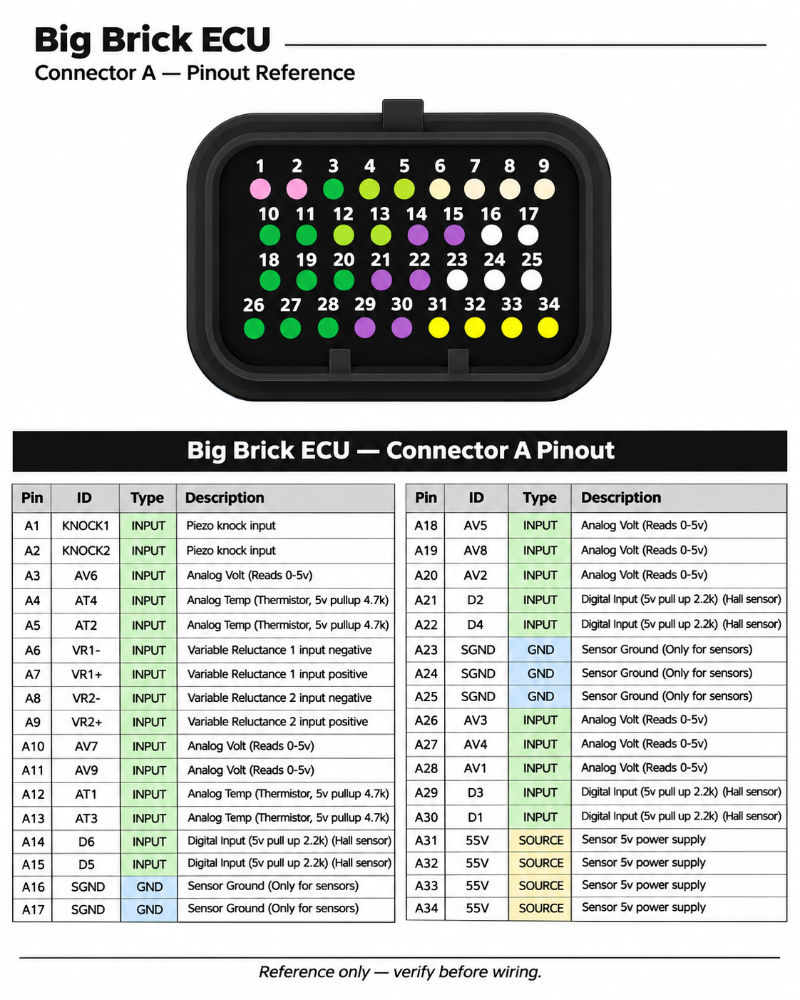
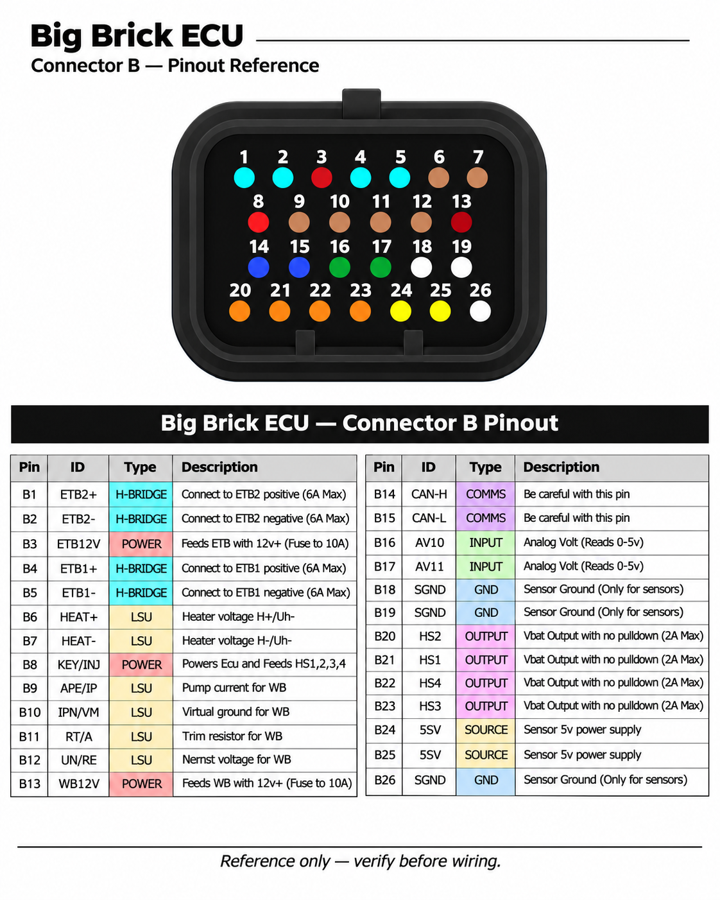
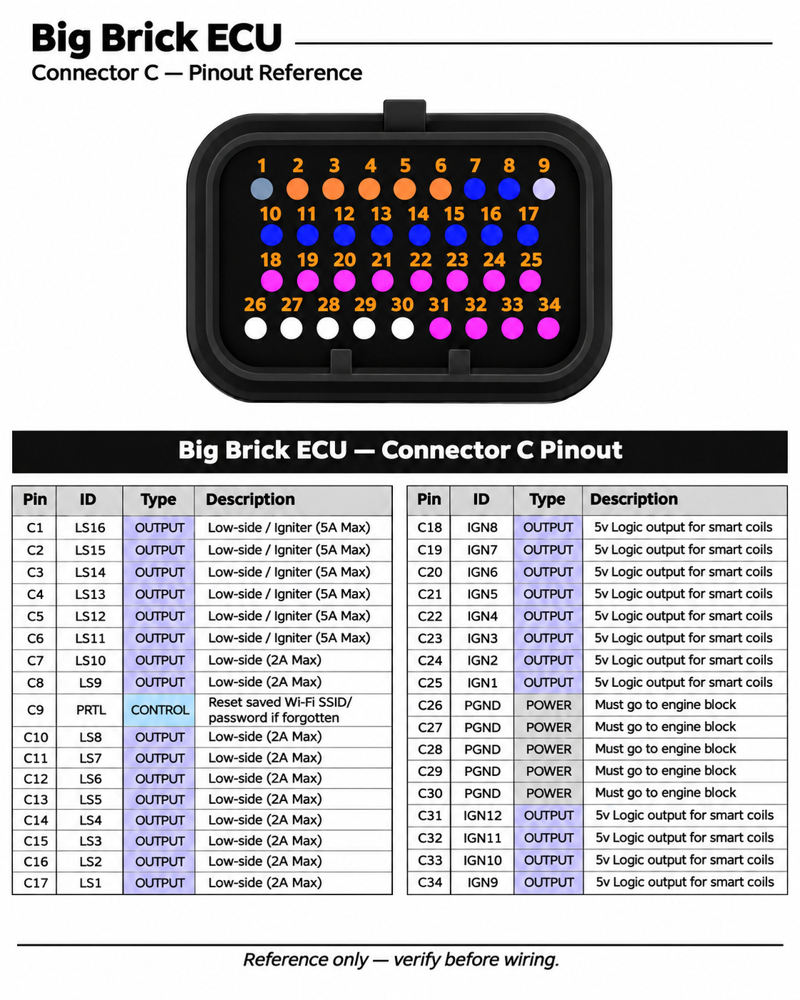

Store / Documentation / Big Brick pinout
BRICK ECU / CONNECTOR ATLAS
Big Brick pinout
Connector A (34 positions), B (26) and C (34). Includes A17 sensor ground, A19 analog voltage input AV8, and IGN1–IGN12 at 5 V logic.
Connector A, B and C diagrams appear first. Jump to the searchable 94-pin table.
FULL CONNECTOR PINOUT CHARTSA / B / C · 94 PINS
The original connector references are shown instead of synthetic connector illustrations. All 94 pin assignments and function colors are in the searchable lookup below. Confirm physical cavity numbering and viewing orientation before wiring.



Visual reference only. Connector-face illustrations are not independently verified as mating-face or wire-entry views. Use the verified physical cavity markings and approved hardware pin assignments.
SEARCH ALL 94 CONNECTOR PINSSEARCH & COPY
Low-sideSmart ignitionHigh-sideH-bridgeAnalog / HallTemperature / VRKnock / wideband5 V supplyCANGround12 V powerControl
Colors identify signal functions in the lookup. Original connector reference images above are unchanged.
| Pin | Signal | Type | Description |
|---|
94 / 94 pins shown
QUICK REFERENCESIGNAL GROUPS
| Connector A | Analog voltage/temperature, Hall/VR, piezo knock, sensor 5 V and SGND |
|---|---|
| Connector B | H-bridges, LSU 4.9, CAN, high-side outputs, voltage inputs and supplies |
| Connector C | 16 low-side channels, 12 × 5 V IGN outputs, PGND and Wi-Fi credential reset (PRTL) |
| A17 | SGND — sensor ground |
| A19 | AV8 — analog voltage input |
| C9 / PRTL | Resets stored Wi-Fi SSID and password |
| Six IGBT-capable outputs | LS11–LS16, included in 16 total low-sides |
| All smart ignition outputs | 5 V logic, IGN1–IGN12 |
| High-side outputs | HS1–HS4 switch VBAT, not ignition logic |
SAFETY & SOURCEIMPORTANT
Hardware connector reference only. These are Brick ECU pin assignments, not a vehicle-specific wiring plan. Physical connector numbering, signal assignment, ratings and load compatibility must be verified for a specific harness. Do not substitute a generic Proteus pinout.
Big Brick connector part numbers: 6473427-1, 6437288-1. Both mating harness connectors and terminal pins are included with the ECU.